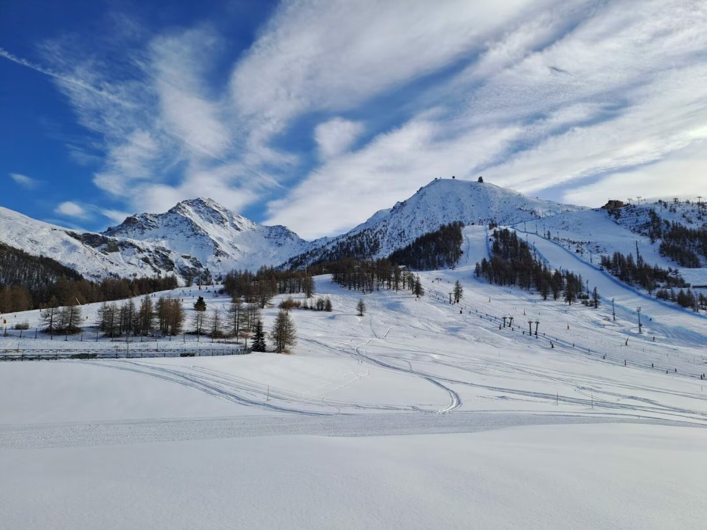

ven–dom11–13
dicembre2 notti
DREAM WEEKEND - POSTI LIMITATI
Sestriere
- Mezza pensione in camera doppia
- Con o senza skipass Vialattea
- Prezzi ridotti per ragazzi e bambini
Hotel Fronte Piste, Sestriere
Iscrizioni in negozio, via mail o al telefonosciclubdonboscoasti@gmail.com
Cesare 3485171707Beppe 3393291015Domenico 3895794663